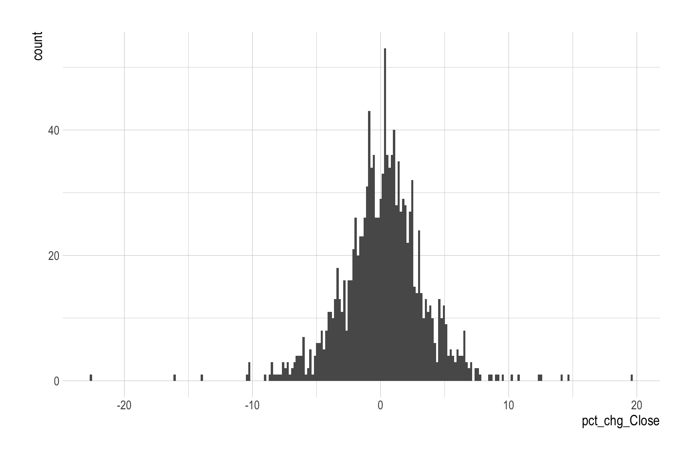
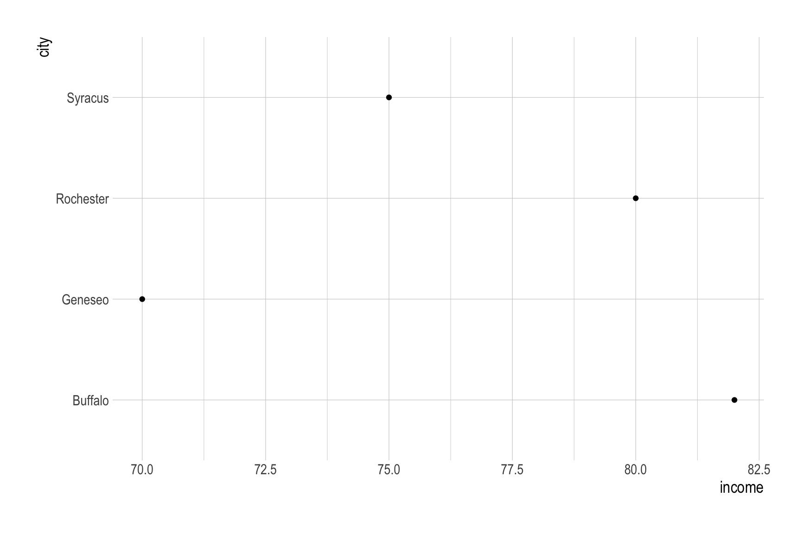
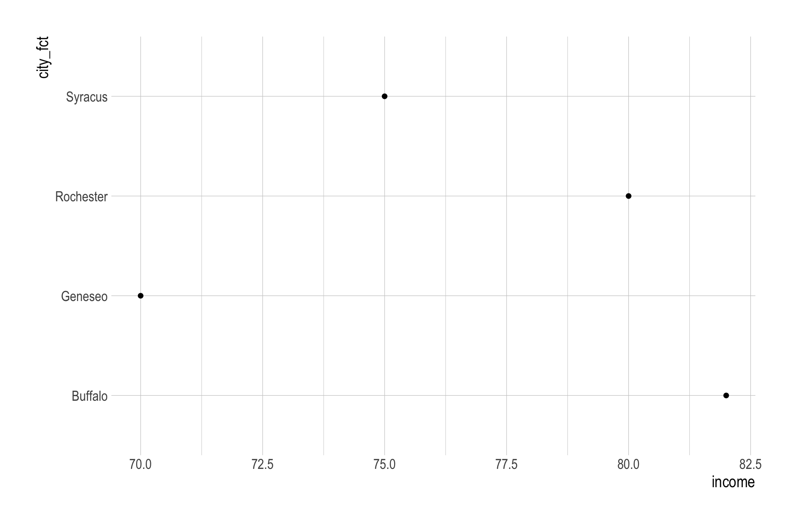
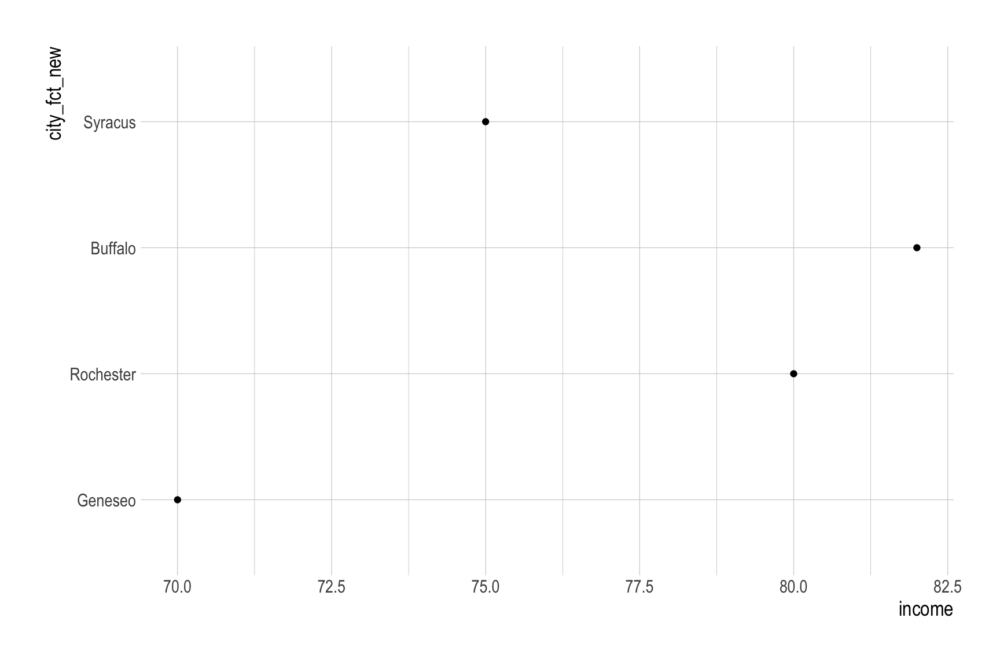
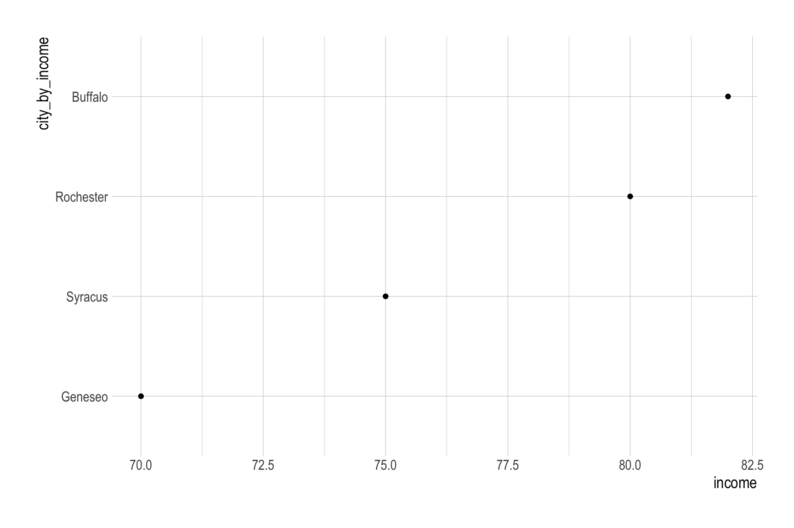
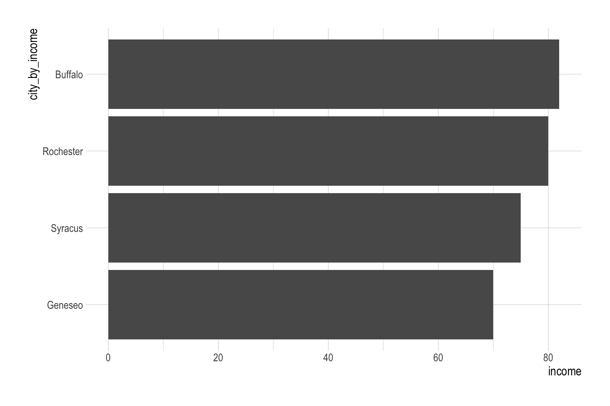
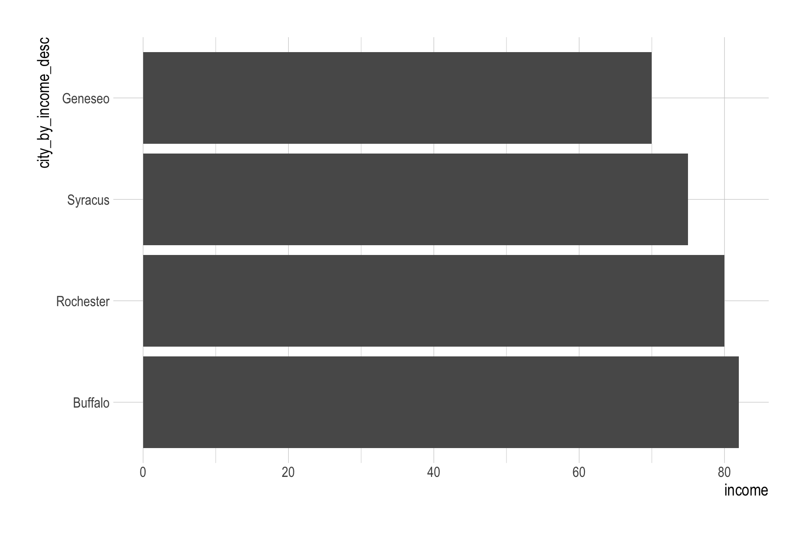
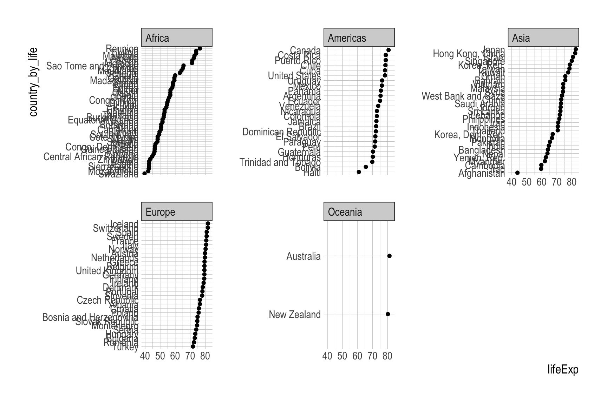

nvda <- read_csv("https://bcdanl.github.io/data/NVDA.csv")Lecture 19 - Note
mutate() / group_by() / summarize()
Classwork 10
Q2e
Read the following CSV file, NVDA.csv, as a data.frame with the name nvda:
Describe the distribution of the daily percentage change in Close price of Nvidia stock.
q2e <- nvda |>
mutate(lag_Close = lag(Close),
chg_Close = Close - lag_Close,
pct_chg_Close = 100 * chg_Close / Close,
.after = Close)ggplot(q2e,
aes(x = pct_chg_Close)) +
geom_histogram(bins = 240)
Factor
# data.frame(
# VARIABLE_1 = VECTOR,
# VARIABLE_2 = VECTOR,
# )
df <- data.frame(
city = c("Rochester", "Buffalo",
"Geneseo", "Syracus"),
income = c(80, 82, 70, 75)
)
df <- df |>
mutate(city_fct = factor(city))
df$city[1] "Rochester" "Buffalo" "Geneseo" "Syracus" class(df$city)[1] "character"df$city_fct[1] Rochester Buffalo Geneseo Syracus
Levels: Buffalo Geneseo Rochester Syracusclass(df$city_fct)[1] "factor"Levels
df <- df |>
mutate(city_fct_new =
factor(city,
levels = c("Geneseo", "Rochester", "Buffalo", "Syracus") ))
df$city_fct[1] Rochester Buffalo Geneseo Syracus
Levels: Buffalo Geneseo Rochester Syracusdf$city_fct_new[1] Rochester Buffalo Geneseo Syracus
Levels: Geneseo Rochester Buffalo Syracusggplot(df) +
geom_point(aes(x = income, y = city))
ggplot(df) +
geom_point(aes(x = income, y = city_fct))
ggplot(df) +
geom_point(aes(x = income, y = city_fct_new))
fct_reorder
df <- df |>
mutate(city_by_income =
fct_reorder(city_fct,
income),
city_by_income_desc =
fct_reorder(city_fct,
-income)
)
df$city_by_income[1] Rochester Buffalo Geneseo Syracus
Levels: Geneseo Syracus Rochester Buffaloggplot(df,
aes(x = income, y = city_by_income)) +
geom_point()
ggplot(df,
aes(x = income, y = city_by_income)) +
geom_bar(stat = "identity")
ggplot(df,
aes(x = income, y = city_by_income_desc)) +
geom_bar(stat = "identity")
multiple observations
df2 <- data.frame(
city = c("Rochester", "Buffalo",
"Geneseo", "Syracus",
"Rochester", "Buffalo",
"Geneseo", "Syracus",
"Rochester", "Buffalo",
"Geneseo", "Syracus"),
income = c(80, 82, 70, 75,
60, 92, 70, 105,
70, 52, 70, 35)
)
df2 <- df2 |>
mutate(city_fct = factor(city),
city_by_income =
fct_reorder(city_fct,
income)
)
df2$city_by_income [1] Rochester Buffalo Geneseo Syracus Rochester Buffalo Geneseo
[8] Syracus Rochester Buffalo Geneseo Syracus
Levels: Geneseo Rochester Syracus BuffaloStrings
df_str <- data.frame(
fruit = c("apple", "banana", "pear")
)
df_str <- df_str |>
mutate(fruit_e = str_detect(fruit, "e"))df_str <- df_str |>
mutate(
fruit_replace = str_replace(fruit,
"a", "-"),
fruit_replace_all = str_replace_all(fruit,
"a", "-")
)df_str <- df_str |>
mutate(fruit_sub1 = str_sub(fruit, 1, 3),
fruit_sub2 = str_sub(fruit, -3, -1),
)df_str <- df_str |>
mutate(fruit_new = ifelse(
fruit == "apple",
"apple bee",
fruit
)
)Classwork 10 - Q2f
# install.packages("gapminder")
library(gapminder)
gapminder <- gapminder::gapminderProvide the R code to create a dotplot that displays the values of country, sorted by lifeExp within each continent for the year 2007.
gapminder_2007 <- gapminder |>
filter(year == 2007)
length( unique(gapminder_2007$country) )[1] 142gapminder_2007 <- gapminder_2007 |>
mutate(country_by_life = fct_reorder(country,
lifeExp))
# gapminder_2007$country_by_lifeggplot(gapminder_2007,
aes(x = lifeExp,
y = country_by_life)) +
geom_point() +
facet_wrap(continent ~ .,
scales = "free_y")